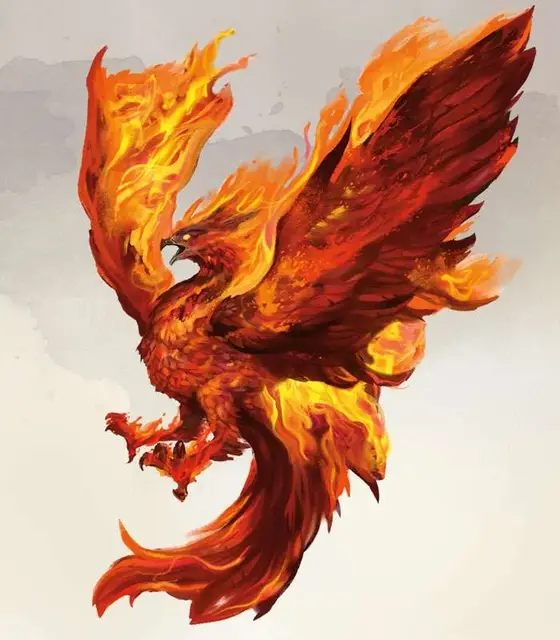

Феникс
Phoenix
Громадный Элементаль, нейтральный

Класс Доспеха 18
Хиты 175 (10к20 + 70)
Скорость 20 футов, летая 120 футов
| мод | спас | ||
|---|---|---|---|
| СИЛ | 19 | +4 | +4 |
| ЛОВ | 26 | +8 | +8 |
| ТЕЛ | 25 | +7 | +7 |
| мод | спас | ||
|---|---|---|---|
| ИНТ | 2 | −4 | −4 |
| МДР | 21 | +5 | +10 |
| ХАР | 18 | +4 | +9 |
Сопротивление урону дробящий, колющий, рубящий от немагических атак
Иммунитет к урону огонь, яд
Иммунитет к состояниям окаменение, опутанность, отравление, сбивание с ног, захват, паралич, ошеломление, истощение
Чувства тёмное зрение 60 футов, пассивное Восприятие 15
Опасность 16 (15000 опыта)
Бонус мастерства +5
Среда обитания Горы, Арктика
Особенности
Сгореть и возродиться. . Когда феникс умирает, он взрывается. Все существа в 60 футах от него должны преуспеть в спасброске Ловкости Сл 20, получая 22 (4к10) урона огнём при провале, или половину этого урона при успехе. Огонь поджигает воспламеняемые объекты в зоне поражения при условии, что они не надеты или не неслись.
Взрыв уничтожает тело феникса, оставляя от него горку пепла в форме яйца. Пепел раскалён, и наносит 21 (6к6) урона огнём любому, кто касается его, но не чаще раза в раунд. Пепел невосприимчив ко всем типам урона, и после 1к6 дней из него появляется новый феникс.
Огненное тело. Феникс может проходить через пространства шириной хотя бы в 1 дюйм не протискиваясь. Любое существо, которое касается феникса или попадает по нему ближней атакой, находясь в пределах 5 футов от него, получает 5 (1к10) урона огнём. Более того, феникс может войти в пространство врага и остаться там. В первый раз, когда он входит в пространство существа в свой ход, существо получает 5 (1к10) урона огнём. Касанием феникс может поджигать воспламеняемые объекты, при условии, что они не были надеты или не неслись (не требует действий).
Облёт. Феникс не провоцирует атак, когда вылетает из досягаемости врага.
Свечение. Феникс распространяет яркий свет на 60 футов и тусклый ещё на 30.
Легендарное сопротивление (3/день). . Если феникс проваливает спасбросок, он может вместо этого сделать спасбросок успешным.
Осадное чудовище. Феникс наносит двойное повреждение объектам и строениям.
Действия
Мультиатака. Феникс совершает две атаки: одну с помощью клюва и одну с помощью пылающих когтей.
Клюв. . Рукопашная атака оружием: +13 к попаданию, досягаемость 15 футов, одна цель. Попадание: 15 (2к6 + 8) урона огнём. Если цель – это существо или воспламеняемый объект, она загорается. До тех пор, пока существо не потратит действие на то, чтобы сбить огонь, она получает 5 (1к10) урона огнём в начале каждого своего хода.
Пылающие когти. . Рукопашная атака оружием: +13 к попаданию, досягаемость 15 футов, одна цель. Попадание: 17 (2к8 + 8) урона огнём.
Легендарные действия
Феникс может совершить 3 легендарных действия, выбирая из представленных ниже вариантов. За один раз можно использовать только одно легендарное действие, и только в конце хода другого существа. Феникс восстанавливает использованные легендарные действия в начале своего хода.
Удар клювом. Феникс делает одну атаку клювом.
Перемещение. Феникс перемещается на расстояние, не превышающее значение своей скорости.
Налёт (стоит 2 действия). . Феникс движется на свою скорость и атакует пылающими когтями.
Описание
Высвобождение феникса из Внутренних Планов создаёт взрыв огня, который расходится по небу. Огромная огненная птица формируется посреди огня и дыма... Древнейший элементаль, одержимый потребностью сжечь всё дотла, Феникс редко надолго остаётся на одном месте, поскольку стремится превратить весь мир в ад.